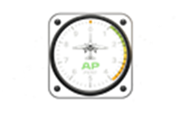

Takeoff / Landing Performance
Avion
Terrain
Conditions météo & marge
Vent
Altimètre — pression / densité
Jour / nuit aéronautiques
Décollage
Roulement
–
Passage 15 m
–
Avec marge
–
Disponible
–
Atterrissage
Roulement
–
Passage 15 m
–
Avec marge
–
Disponible
–
Méthode de calcul et sources
Avertissement. Cet outil est une aide à la préparation du vol. Les corrections température/altitude/vent sont extrapolées faute d'abaque complet pour la plupart de ces avions (voir « Méthode de calcul » et les avions sélectionnés). Il ne remplace pas le Manuel de Vol officiel de chaque appareil, le bulletin météo du jour, ni le jugement du commandant de bord. Vérifiez systématiquement les marges réelles avant chaque décollage et atterrissage.